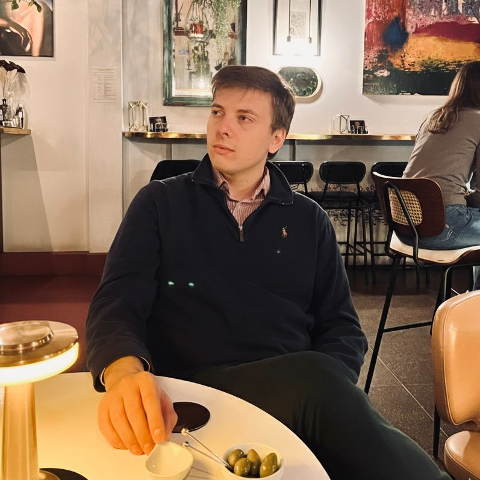
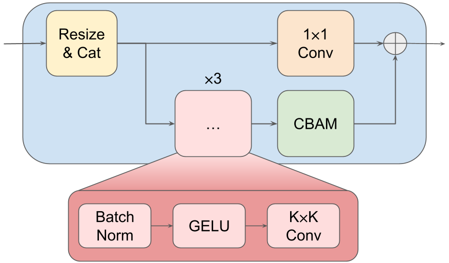
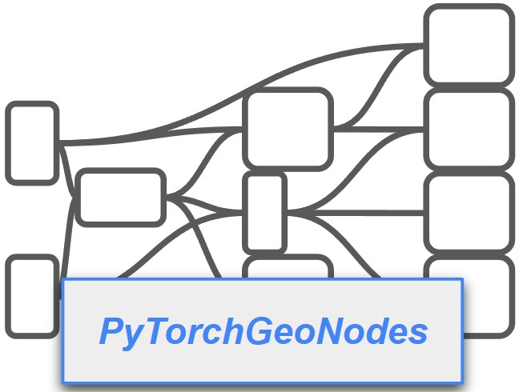

|
Mattia D'Urso I am a PhD student in Prof. Friedrich Fraundorfer's group at the Institute for Visual Computing (IVC) at Graz University of Technology, Austria. Previously, I gained professional experience at the Canva office in Vienna and at Infineon Technologies in Villach, Austria. I hold a joint Master's double degree from the University of Klagenfurt and the University of Udine, where I also completed my Bachelor's degree. |
 |
{kind=link}
ResearchMy research focuses on 3D Computer Vision and Machine Learning, with a specific interest in Pose Estimation and Structure from Motion (SfM). |

|
A Lod of Gaussians: Unified Training and Rendering for Ultra-Large Scale Reconstruction with External Memory
Arxiv
A LoD of Gaussians enables the reconstruction and interactive visualization of ultra-large-scale scenes by replacing traditional scene partitioning with a dynamic, out-of-core Level-of-Detail framework. |
|
 |
SANDesc: A Streamlined Attention-Based Network for Descriptor Extraction
3DV 2026
SANDesc is a descriptor module that can be trained on top of any existing keypoint detector. It significantly improves pose estimation performances on high-resolution images. |
|
 |
Pytorchgeonodes: Enabling Differentiable Shape Programs for 3D Shape Reconstruction
CVPR 2025
PyTorchGeoNodes is a differentiable module that enables reconstruction of 3D objects and their semantic parameters using interpretable shape programs. |
|
Template adapted from Jon Barron. |